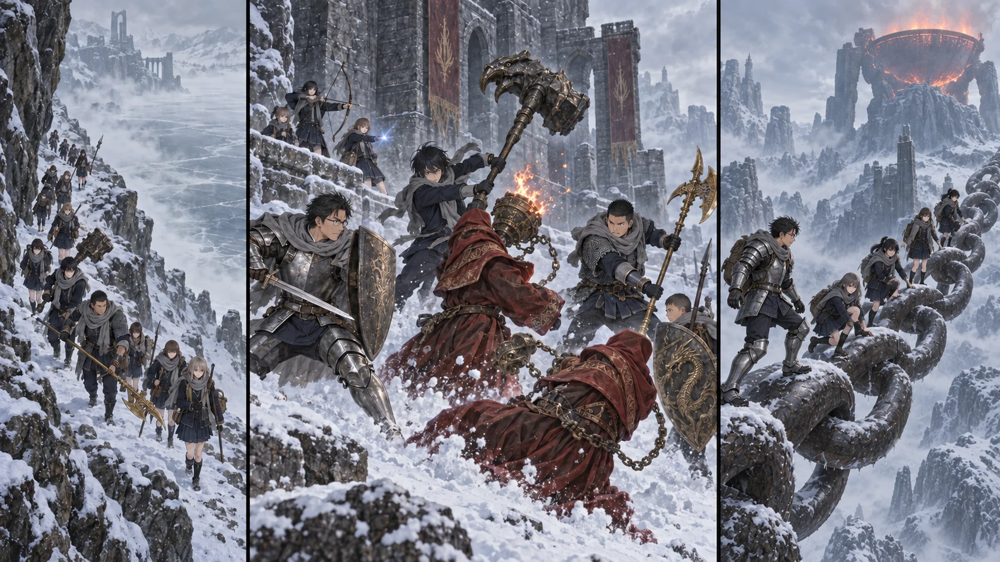

DAY78 / TURN1−88
世界を繋ぐ、一本の鎖。

陸「今度は俺が、戻るところを空けます」
【DAY78｜湖岸・2d6＝3・6＋4＝13】白い湖を横切れば早い。陸にも、そう見えた。地図の端をなぞる道は遠回りで、足元には岩が出ている。けれど中央の霧から何かが響くと、近道に見えていた白さが急に深くなる。十三人は岸に沿って進み、誰も氷の上へ確かめに行かなかった。
第一マリカ教会へ着くまで、陸は大剣の重さを何度も持ち替えた。腕は以前より強くなった。それでも一日中、構えて歩くことはできない。すぐ抜ける位置に固定し、狭い所では後ろの者に穂先を向けない。直人に教わったのは、戦う時以外にも気をつけることが多かった。
壊れた教会には、石の女王が立っていた。その足元で聖杯の雫を一つ見つける。葵が布に包み、紬が拾った場所を記録した。瓶の回復がどこまで変わるかは、後で祝福で確かめる。今日の携行瓶を、その場で強くなったものとして数え直さない。祝福そのものは位置を残し、さらに先へ進んだ。
【炎を守る者｜2d6＝2・5＋4＝11】砦の外を回った先で、赤い衣が二つ動いた。炎僧だった。道を外れれば雪の斜面に隊列が広がり、足の遅れた者から見失う。待って通すには、向こうが近すぎた。先生が盾を上げた。「二人だけだ。奥へ追わない」。
一人目が武器を振り上げ、もう一人が手元に火を集める。先生は火の正面に立ち止まらず、横へ動いて相手の顔をこちらへ向けた。健太と陽太が、後ろの生徒へ近づく道を塞ぐ。盾を並べて全員で押し潰す場所ではない。大地は先生の外側に、直人は反対側に幅を取った。
陸は、先生が下がってくる場所へ立っている自分に気づいた。さっきまで、前へ出ることばかり考えていた。半歩横へずれる。「今度は俺が、戻るところを空けます」。先生がそこを使って離れ、追った炎僧の足元が見えた。大剣を両手で振り、武器を戻す前に、相手の姿勢を崩す。
衝撃は、練習よりずっと重かった。刃が止まる。腕を力任せに引けば、自分も前へ転ぶ。陸は柄を捻って抜き、直人の大竜爪が入る側を空けた。大きな武器が叩きつけられ、炎僧が雪へ倒れる。赤い衣の端に残った火を見ても、勝ったつもりで背中を向けなかった。まだ一人いる。
悠の杖先から三つの光が分かれた。輝石の流星が、火を集めるもう一人へ角度を変えて追う。拓海の輝石が別の隙を突き、花と千夏が交互に矢を送った。味方が横切る時には、弦を引いたまま待つ。火を放つ姿勢が崩れたところへ、大地の黄金のハルバードが届いた。二人目も動かなくなった。
先生は人数を確かめてから、陸の剣を見た。「手は痛めてないか」。陸は指を一本ずつ開いた。大丈夫だ。直人が刃に付いた雪を払い、小さな傷を指した。「帰ったらここを見る」。持ち主になったというのは、振れるようになったことだけではない。陸は頷き、その傷を覚えた。
得たルーンは百六十。新しい装備は回収できなかった。遠征で使った矢は六本、悠と拓海の術は一回ずつ。誰も傷つかずに通れた道を、さらに奥の敵を探して広げることはしない。先生は炎僧がいた位置に印をつけ、砦の内部を白いまま残した。
【巨大な鎖｜2d6＝4・4＋4＝12】谷にかかるそれを、最初は橋だと思った。近づくと、足元の一つ一つが巨大な輪だった。建物を縛りつけるために作ったような鎖が、山と山を繋いでいる。風が吹くたび、輪の隙間から下の白い谷が見えた。
重い武器を持つ者が続きすぎないように順番を変える。鎖の同じ輪に全員を乗せず、前の者が足を決めてから進んだ。陸は大剣を身体へ寄せ、先生の靴が置かれた場所へ目を落とす。剣の使い方より、普通に歩くことの方が怖い日もある。後ろで千夏が短く息を吐く音がした。
渡った先の巨人墓標で祝福の位置を記録し、地図の東側を手に入れた。安息教会へ延びる道は、今日は選ばない。先読みが告げる侵入者の危険を、今この人数で試す理由はない。丘を上がるほど、地平線の上にある巨大な器の縁が高くなった。火の釜。先生が話していた目的地が、景色を押し潰す大きさでそこにあった。
【火の釜の麓】午後、岩陰に金の光を見つけた。先生は周囲を確かめ、祝福を灯した。十三人が順番に手を伸ばす。十二番目の解放。今度は、ここから再開できる。遠くの霧の向こう、火の巨人が守る場所へはまだ踏み込まなかった。
日暮れまで、少し時間がある。陸は大剣を置き、先生が考えている顔を見た。ここまで来たのだから、という言葉は誰も口にしないまま、皆の間にあった。先生は地図を畳んだ。「今日は身体を戻す。明日は約束通り帰る。次は、この場所からだ」。三日かけた道をもう一度歩き直さずに済むことが、その決断を支えていた。
【同日・教会｜第3チーム 2d6＝3・2＋4＝9】翼たちは鹿二頭と、その日の取水を持ち帰った。留守番の誠が空けておいた場所へ荷を下ろす。結衣は入口の石積みを点検していたが、遠征がどこまで進んだかはまだ分からない。帰還予定まで、あと一日。夕食の人数を間違えないよう、今日は二十の器を並べた。
麓の祝福で、陸は自分の手を眺めた。剣を持った跡が薄く残り、指の間にはまだ冷たさがある。初めての武器を使って戦い、戻る場所を空けて、十三人でここにいる。直人が隣へ座った。陸は剣を指した。「これ、ちゃんと持って帰ります」。直人は今度も、大丈夫だとは代わりに言わなかった。ただ、頷いた。
今回の判定記録
| 判定 | 出目 | 補正 | 合計 |
|---|
| lake-shore | 3+6 | 4 | 13 |
| monk-approach | 2+5 | 4 | 11 |
| chain-and-foot | 4+4 | 4 | 12 |
| C-supply | 3+2 | 4 | 9 |
抽選前の条件 · 抽選結果